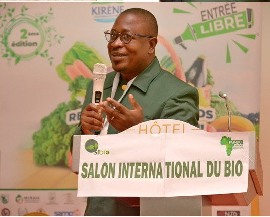
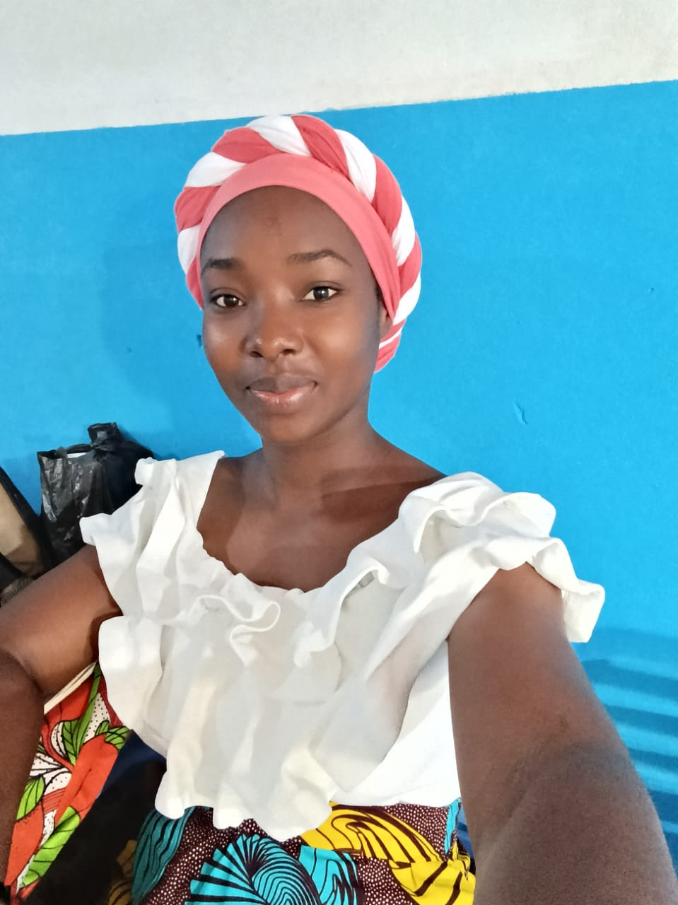
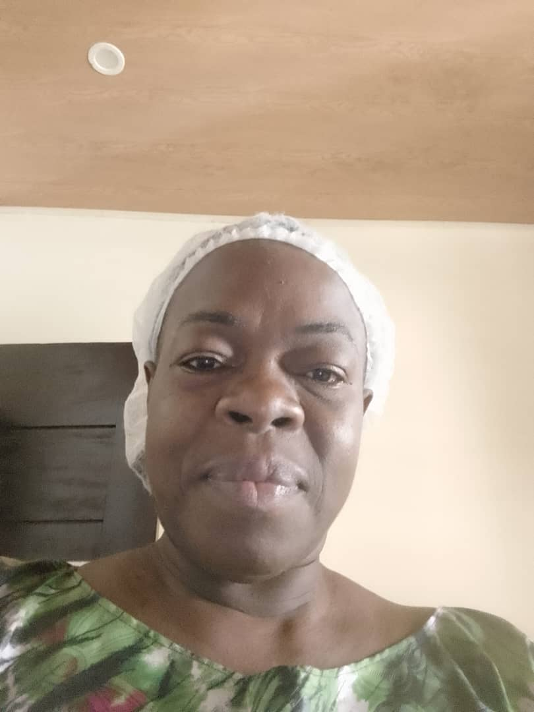
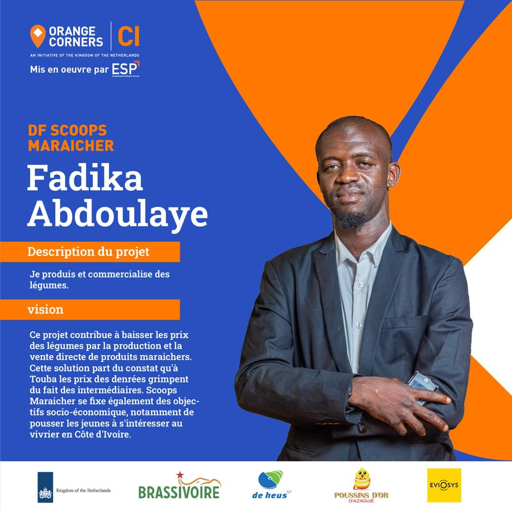
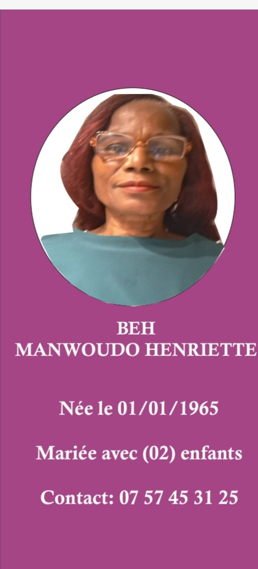

Où se déroule le salon du bio ?
Le SIBIO est présenté comme le salon du bio à Abidjan, avec une portée nationale grâce aux représentations FAP-BIO.
Forum Africain pour la Promotion du Bio
presente le

Le Salon du Bio à Abidjan, porté par le FAP-BIO et le SIBIO 2026, met en avant l'agriculture biologique, le bien-être, la santé naturelle et les initiatives durables en Côte d'Ivoire. Cette plateforme relie producteurs, consommateurs, institutions, partenaires et représentants régionaux autour d'une même ambition : promouvoir une consommation plus saine et des pratiques responsables.
Le site permet de découvrir le salon du bio, les sections régionales, les éditions SIBIO, les opportunités de partenariat et les informations de réservation pour participer à l'événement bien-être en Côte d'Ivoire.
Le SIBIO est présenté comme le salon du bio à Abidjan, avec une portée nationale grâce aux représentations FAP-BIO.
Le salon traite du bio, du bien-être, de la santé naturelle, de la biodiversité et des solutions agricoles durables.
Mission, vision, objectifs et rôle du Forum Africain pour la Promotion du Bio.
Le FAP-BIO (Forum Africain pour la Promotion du Bio) est une organisation panafricaine qui promeut l'agriculture biologique, la protection de la biodiversité et le développement durable à travers l'Afrique.
Sensibiliser, former et rassembler les acteurs du secteur bio afin de structurer un écosystème solide, crédible et visible à l'échelle nationale et internationale.
Promouvoir les produits biologiques, accompagner les producteurs et favoriser des pratiques agricoles respectueuses des sols, de l'eau et de la biodiversité.
Faire émerger une Afrique où l'agriculture biologique est une réponse crédible à la sécurité alimentaire, à la santé publique et à la résilience climatique.
Le FAP-BIO s'est développé comme une structure porteuse capable de fédérer les initiatives bio, de renforcer la visibilité du secteur et d'organiser des rendez-vous majeurs comme le SIBIO.
L'organisation agit à la fois sur la sensibilisation, la formation, l'intermédiation, le développement de marchés et la mise en relation entre acteurs institutionnels, techniques et économiques.
Organisation hiérarchique du bureau exécutif et des structures associées.
• Président du FAP-BIO
• Commissaire Général du SIBIO
Biographie
Boga Ibo Constant est une figure de référence dans la promotion de l’agriculture biologique, de la transition écologique et de la finance carbone appliquée au secteur agricole en Afrique.
Ingénieur en commerce international et Manager des organisations, il dispose d’une expertise pointue renforcée par des certifications en bilan carbone, décarbonation et finance carbone agricole, lui permettant d’accompagner des initiatives structurantes en faveur de systèmes agricoles durables et résilients.
En sa qualité de Président du Forum Africain pour la Promotion du Bio (FAP-BIO), il pilote une organisation engagée dans la transformation des modèles agricoles africains, en favorisant l’adoption de pratiques agroécologiques, la certification biologique et la valorisation des chaînes de valeur durables.
Par ailleurs, en tant que Commissaire Général du Salon International du Bio (SIBIO), il impulse une dynamique de coopération entre acteurs publics et privés, producteurs, investisseurs et institutions, autour des enjeux de consommation responsable, d’innovation agricole et de développement des marchés du bio en Afrique.
Acteur engagé de la transition climatique, Boga Ibo Constant œuvre à l’intégration des mécanismes de finance carbone agricole, notamment à travers le développement de projets de crédits carbone, offrant ainsi de nouvelles opportunités économiques aux producteurs tout en contribuant aux objectifs globaux de réduction des émissions de gaz à effet de serre.
Visionnaire et stratège, il incarne un leadership orienté vers l’impact, avec pour ambition de faire de l’Afrique un acteur majeur d’une agriculture durable, compétitive et tournée vers le bien-être des populations.
• Vice-Présidente 1
N’GOAN Audrey Claude Eyua est une hydrogéologue et consultante environnementale ivoirienne engagée dans la promotion du développement durable, de la gestion intégrée des ressources naturelles et de l’adaptation au changement climatique en Afrique.
Titulaire d’un Master en Hydrogéologie de la University of Ghana, classée parmi les meilleures universités africaines selon le classement Times Higher Education 2024, elle possède également un Bachelor en Sciences de la Terre de la même institution ainsi qu’un Diplôme Universitaire de Technologie (DUT) en Mines et Hydrocarbures de l’Institut National Polytechnique Félix Houphouët-Boigny.
Spécialiste des questions liées à l’eau, aux terres et à la résilience climatique, Audrey développe des approches innovantes alliant expertise scientifique, solutions fondées sur la nature et technologies émergentes, notamment l’intelligence artificielle appliquée à l’environnement et à l’agriculture durable.
Fondatrice et CEO d’ECODAL CI et d’AGRINOV, elle œuvre pour une agriculture durable, la valorisation des solutions écologiques locales et le renforcement de la résilience des communautés face aux défis environnementaux. En parallèle, elle intervient comme consultante auprès d’Anoures Expertise, où elle accompagne des initiatives liées à la fertilité des sols, à la gestion durable de l’eau et aux pratiques agricoles responsables. Désormais Fresqueuse Climat, elle anime également des ateliers de sensibilisation et d’intelligence collective autour des enjeux climatiques, afin de favoriser une meilleure compréhension des défis environnementaux et encourager le passage à l’action auprès des jeunes, des communautés et des organisations.
Auteur du livre pédagogique J’aime mon pays, je protège ma planète, publié aux Éditions Nimba et destiné aux enfants de 7 à 12 ans, elle s’investit activement dans l’éducation environnementale et la sensibilisation des jeunes générations aux enjeux écologiques. Son parcours est enrichi par plusieurs certifications internationales en gestion environnementale, leadership, inclusion sociale, entrepreneuriat vert et innovation agricole, notamment auprès de UNITAR, CIFOR-ICRAF et Guzakuza.
Membre active de l’Association des Scouts Catholiques de Côte d’Ivoire, elle incarne des valeurs de leadership, de discipline et de service communautaire à travers des initiatives concrètes en agroécologie, assainissement durable et sensibilisation environnementale. En tant que Vice-Présidente du FAP-BIO, N’GOAN Audrey Claude Eyua met son expertise au service de la promotion d’une agriculture biologique durable, de la protection des écosystèmes et du renforcement des capacités des communautés pour une transition écologique inclusive et résiliente.
• Vice-Président 2
Coordination des décisions majeures et partenariats.
Entrepreneur-paysagiste, spécialiste en bâtiment, en aménagement paysager et en embellissement urbain, Augustin Badiel cumule plus de vingt années d’expérience dans les domaines du BTP, du génie civil, de l’architecture de paysage et du développement durable en Côte d’Ivoire et en Afrique de l’Ouest.
Depuis 2016, il est Directeur Général de MAISONS & JARDINS SARL Côte d’Ivoire et de MAISONS & JARDINS SARL Burkina Faso, deux entreprises spécialisées dans la construction, l’aménagement d’espaces verts, les infrastructures urbaines et les projets environnementaux. Son parcours professionnel est marqué par la réalisation de nombreux projets de référence pour des institutions prestigieuses telles que le Sofitel Hôtel Ivoire, le 43e BIMA, Azalaï Hôtel Burkina Faso, la Force Française en Côte d’Ivoire, ainsi que plusieurs collectivités territoriales et promoteurs immobiliers.
Passionné par la nature, l’agriculture durable et l’esthétique environnementale, il développe une expertise reconnue dans la conception de jardins publics et privés, les parcs agroforestiers, les systèmes d’irrigation, les murs végétaux, les bassins artificiels, les piscines, l’assainissement et les projets de reboisement. Il possède également une solide expérience en gestion de projets de construction, en voirie et réseaux divers (VRD), en étanchéité et en solutions écologiques adaptées aux réalités africaines.
Formé en informatique de gestion, en bâtiment et en paysagisme, il poursuit actuellement un Bachelor en Paysagisme au sein de Bridge Western Graduate Institute. Il a également obtenu plusieurs certifications internationales, notamment auprès de l'Organisation des Nations unies pour l'alimentation et l'agriculture, en agripreneuriat, restauration des paysages et forêts, ainsi qu’en étude d’impact carbone.
Au sein du Forum Africain pour la Promotion du BIO, il occupe la fonction de 2e Vice-président chargé de la mobilité. À ce poste, il contribue activement à la coordination logistique, à la mobilité organisationnelle et au développement des initiatives liées à la promotion de l’agriculture biologique, de l’écologie urbaine et du développement durable en Afrique.
• Vice-Présidente 3
Suivi des projets et représentation externe.

• Secrétaire Général
Commissaire scientifique du SIBIO
Titulaire d’un doctorat en Biodiversité et Valorisation des Écosystèmes obtenu à l’Université Félix Houphouët-Boigny d’Abidjan.
Spécialiste reconnu en raniculture, élevage de grenouilles, et en valorisation des déchets agricoles et ménagers par le vermicompostage, il développe des solutions innovantes au croisement de l’aquaculture, de l’agroécologie et de l’économie circulaire.
Chercheur engagé et passionné, Dr Oungbe consacre ses travaux à la promotion de systèmes de production durables, intégrant la conservation de la biodiversité et la création de valeur économique.
Il est le fondateur de Anoures Expertise, une structure dédiée au développement et à la professionnalisation de l’élevage de grenouilles en Afrique. Par ailleurs, il occupe les fonctions de Secrétaire Général National du FAP-BIO et de Commissaire scientifique du SIBIO, où il contribue activement à la structuration des initiatives scientifiques et environnementales.
Son parcours allie enseignement supérieur, coordination de projets de développement rural et expertise technique en aquaculture et agroécologie. Grâce à cette expérience multidisciplinaire, il s’impose aujourd’hui comme une référence africaine dans le domaine de la raniculture et de la valorisation durable des écosystèmes.
• Secrétaire Général Adjoint
Assistance et suivi administratif.

• Trésorier Général
Gestion financière et budget du FAP-BIO.

• Vérificteur comptable
Suivi et contrôle des opérations financières.
• Trésorier Général
Gestion financière et budget du FAP-BIO.
• Vérificteur comptable
Suivi et contrôle des opérations financières.
Responsable Communication
Lamine Soumahoro est un professionnel de la communication et de l’événementiel reconnu pour son dynamisme, son sens du protocole et sa maîtrise de l’art oratoire. Maître de cérémonie professionnel, il s’est imposé comme une figure montante dans l’univers de l’animation institutionnelle et des grands rendez-vous professionnels en Côte d’Ivoire.
Certifié Jeune Expert en Protocole, Lamine Soumahoro possède une solide expertise dans la gestion protocolaire, la coordination événementielle et la conduite de cérémonies officielles, culturelles et corporatives. Son aisance relationnelle, sa rigueur organisationnelle et son élégance professionnelle font de lui un acteur apprécié dans les milieux institutionnels et associatifs.
Parallèlement à ses activités de maître de cérémonie, il est Manager Général de SOULAM GROUP COMMUNICATION, une structure spécialisée dans la communication, l’événementiel et la valorisation d’initiatives professionnelles et culturelles.
Engagé pour le développement durable et la promotion des initiatives africaines, Lamine Soumahoro occupe également le poste de Responsable Communication du FAP-BIO. À travers cette fonction, il contribue activement à la visibilité des actions du forum, à la promotion de l’agriculture biologique en Afrique ainsi qu’au rayonnement des événements majeurs portés par l’organisation, notamment le Salon International du Bio (SIBIO). Grâce à son professionnalisme, son leadership et sa passion pour la communication stratégique, Lamine Soumahoro œuvre à bâtir des passerelles entre les institutions, les entreprises et les communautés autour des enjeux du développement durable et de la valorisation du secteur biologique africain.
• Organisation
Coordination des événements et logistique.
Cliquez sur un représentant pour ouvrir sa fiche.

Abidjan

Président du grand Ouest

Région: San-Pédro
Région: Nawa
Région: Ouest
Région: Agnéby-Tiassa
Région: La Mé
Région: Grands-Ponts
Région: Marahoué
Région: Gbêkê
Région: Bélier
Région: Iffou
Région: N'Zi
Région: Moronou
Région: Gôh
Région: Lôh-Djiboua
Région: Haut-Sassandra
Région: Guémon
Région: Tonkpi
Région: Cavally
Région: Bafing
Région: Béré
Région: Worodougou
Région: Hambol
Région: Poro
Région: Tchologo
Région: Bagoué
Région: Kabadougou
Région: Folon
Région: Gontougo
Région: Indénié-Djuablin
Région: Sud-Comoé
Région: Mé